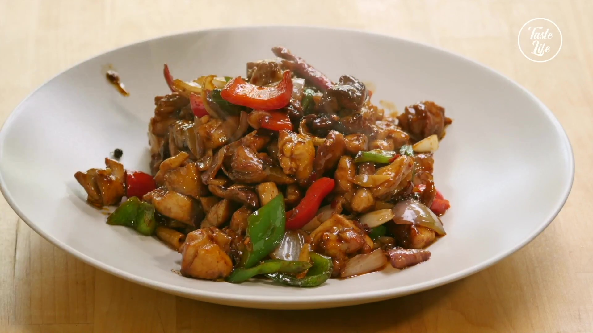

Back to Recipes
Chicken Saute
Ingredients:
- Half kg chicken breast
- 2 teaspoons of oil
- 1 teaspoon
- 2 green peppers
- 1 red pepper
- 1 onion
- 2 cloves of garlic
- 2 tomatoes
Instructions:
- Chop the chicken meat. Chop the onions for cooking, the peppers in julienne, and the tomatoes into cubes.
- Fry the chicken over low heat, stirring occasionally. After draining a little, add the onions and finely cut garlic.
- After frying for 1-2 minutes, add the peppers. When the peppers are sautéed, add the tomato, tomato paste, spices and salt and continue cooking.
- Finally, add 1 glass of water and cook with the lid closed until the meat is cooked.